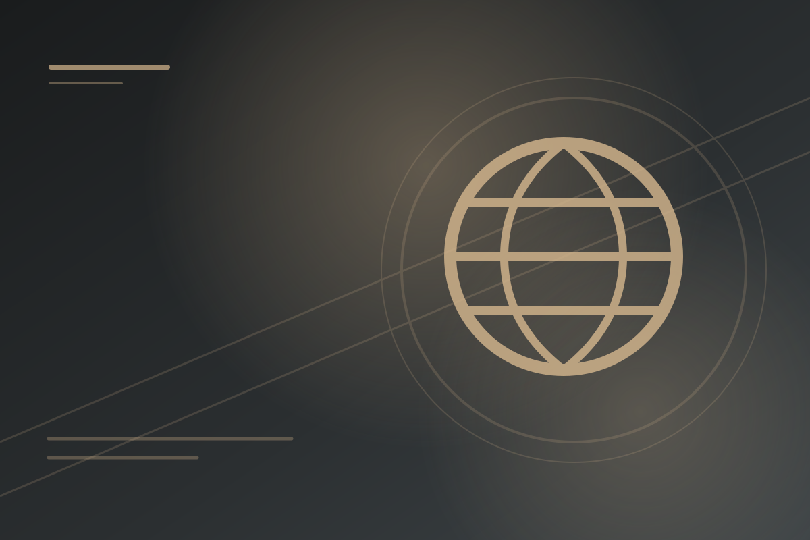
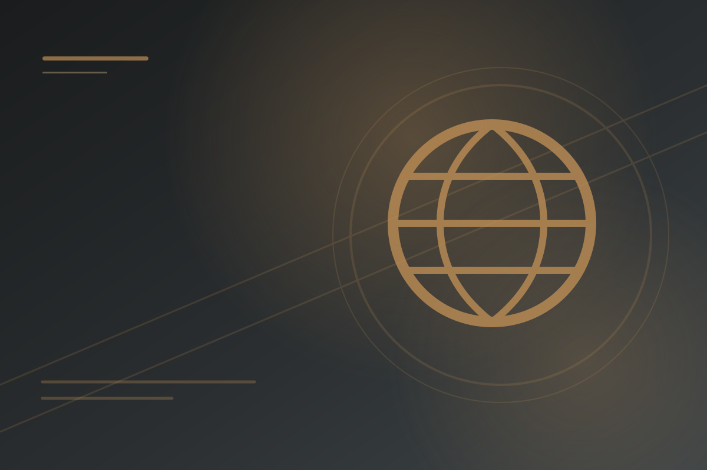
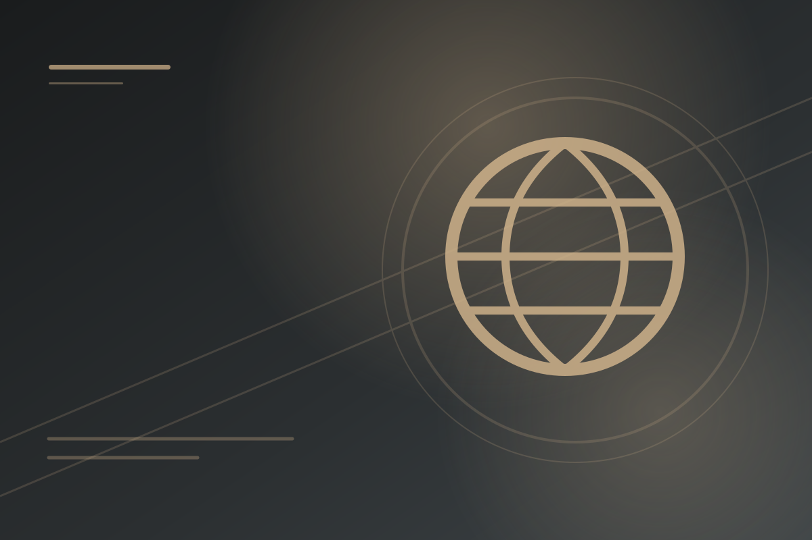
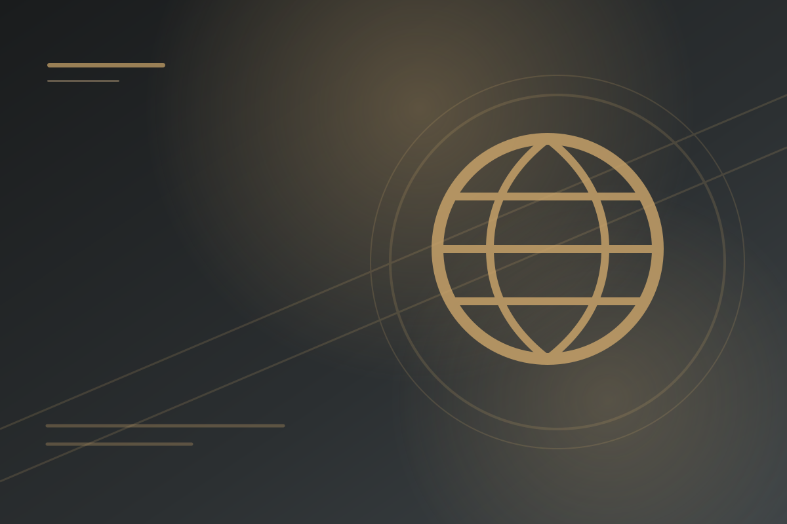
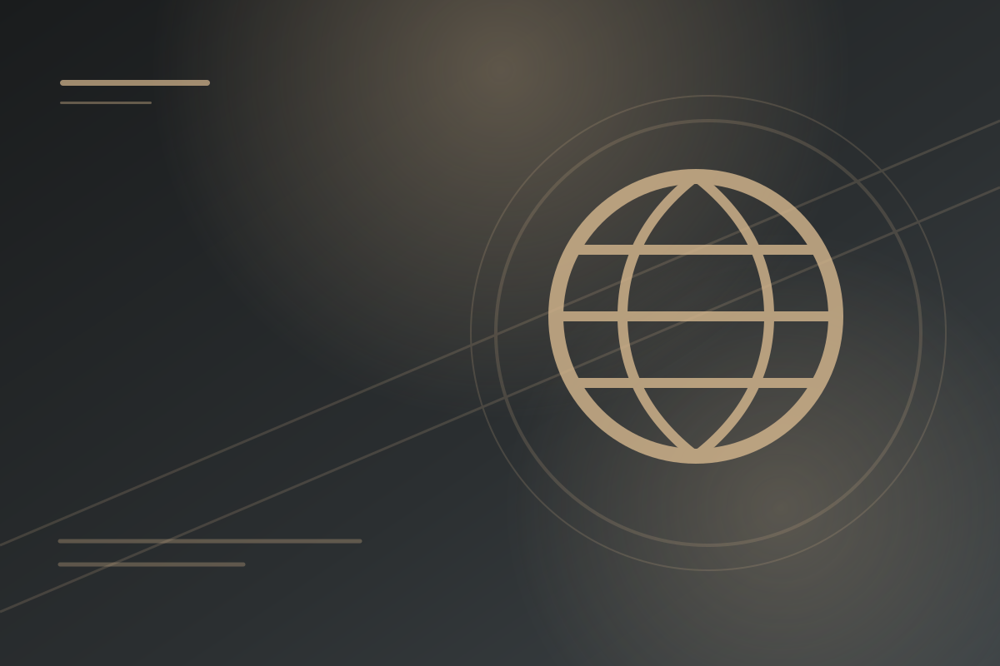
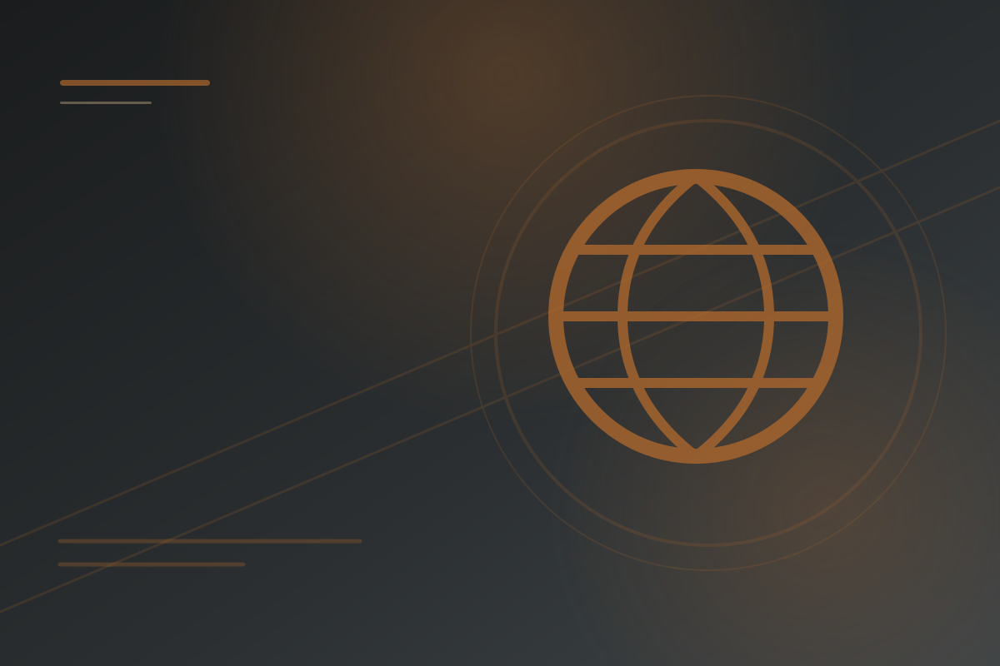
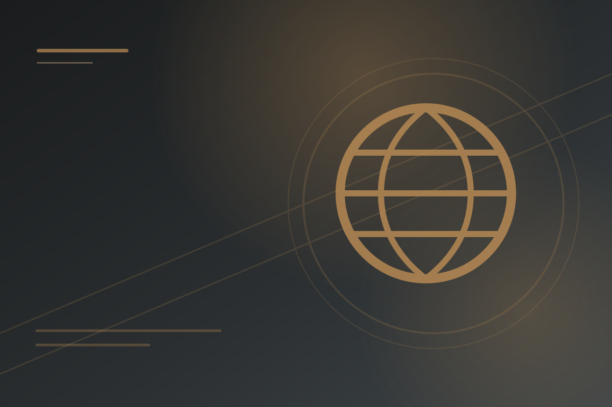
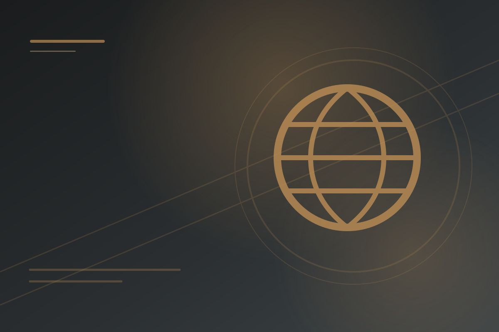
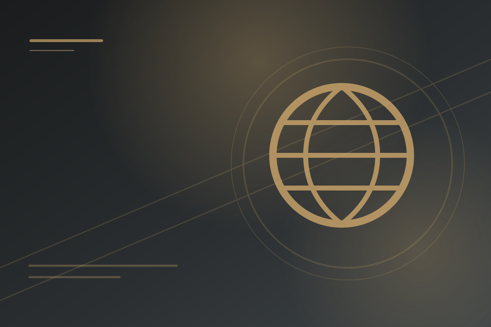

Global Conflict
World wars, total war, revolution, mass violence, and global political disruption from c. 1900 to the present.


Shifting Power After 1900
Imperial decline, rivalry, nationalism, and new global tensions.


Causes of World War I
Militarism, alliances, imperialism, nationalism, and crisis.


Conducting World War I
Total war, technology, trench warfare, and civilian mobilization.


Economy in the Interwar Period
Depression, state intervention, and economic instability.


Unresolved Tensions After WWI
Empire reorganized, mandates, Japanese expansion, and anti-imperial resistance.


Causes of World War II
A failed peace, the Depression, imperial ambition, and the rise of fascist regimes.


Conducting World War II
Total war, mobilization, propaganda, and new technology of mass casualties.


Mass Atrocities After 1900
Causes and consequences of genocide, ethnic violence, and the attempted destruction of specific populations.

Causation in Global Conflict
Analyze causes and consequences of twentieth-century global conflict.